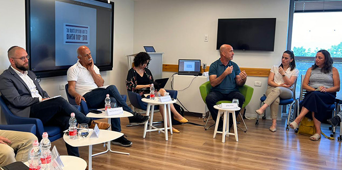
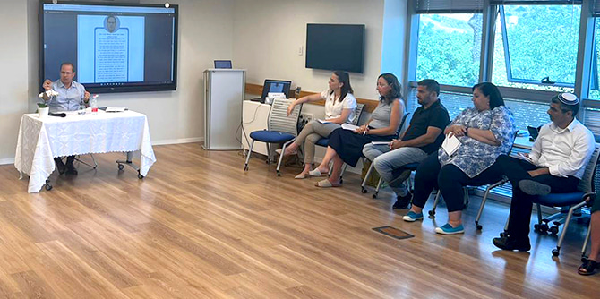
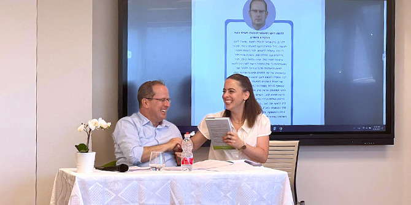

 דרור איתן, מנחה הפנאל (צילום: קרן מנדל-ישראל)
בחלקו הראשון של היום שוחח
עו״ד רז נזרי, המשנה ליועץ המשפטי לממשלה לענייני ניהול ותפקידים מיוחדים, עם העמיתים על הרקע המשפטי, הסטטוטורי והחברתי שהוביל לניסוח החוק ועל אישורו בכנסת. כן הציג שימושים שנעשו לאחרונה בחוק בבתי המשפט והסביר על הקשר בין החוק לבין הגדרתה המורכבת והעדינה של ישראל כמדינה יהודית ודמוקרטית.
 עו"ד רז ניזרי (צילום: קרן מנדל-ישראל)
בחלקו השני של היום התקיים פאנל:
עו״ד רביע אגבריה מ״עדאלה – המרכז המשפטי לזכויות המיעוט הערבי בישראל", הציג את הרציונל מאחורי עתירת הארגון לבג"צ נגד החוק, בטענה שהוא מעגן בחוקה הישראלית עמדה משטרית גזענית;
תא״ל (במיל׳) אמל אסעד, מוביל מטה המאבק לתיקון חוק הלאום, הציג את עמדתו האישית כפטריוט ישראלי, איש צבא ובן העדה הדרוזית, שמקבל את הגדרת המדינה כיהודית, אך טען שבלשונו הנוכחית החוק יוצר אפליה פסולה ומיותרת;
ד״ר תמר הוסטובסקי-ברנדס מהפקולטה למשפטים בקריה האקדמית אונו הביעה את החשש שבהיותה של ישראל "מדינה בהקמה", החוק מקבע את השסע היהודי-הפלסטיני באופן שמכשיל מראש כל ניסיון ליצירת זהות לאומית "ישראלית"; ועו״ד דוד פטר מפורום קהלת, הציג עמדה התומכת בחוק וטען שישראל היא מדינה דמוקרטית בזכות זהותה כמדינת הלאום של העם היהודי, ולכן יש טעם ואף הכרח לעגן זהות זו בחוק יסוד, וזאת תוך הענקת זכויות אזרח מלאות לבני המיעוט הערבי.
היום הסתיים במפגש דיון ועיבוד של עמיתי התוכנית וצוותה בהנחיית חברת צוות המרכז
אפרת ניסימוב-שרשבסקי, שאף ליוותה את לימודי המנהיגות בחברה מגוונת לאורך השנה. את יום הלמידה, שהיה יוזמה של עמיתי תוכנית מנדל למנהיגות חברתית בצפון ופותח ואורגן על-ידם בסיוע צוות התוכנית, הנחתה עמיתת התוכנית
חן טסלר.

עו"ד רז ניזרי והעמיתה חן טסלר (צילום: קרן מנדל-ישראל)
{kind=link}
{kind=link}
{kind=link}